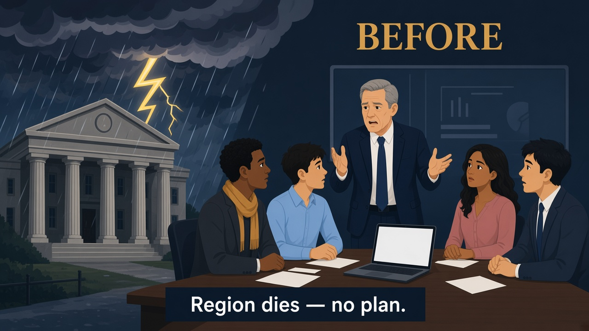
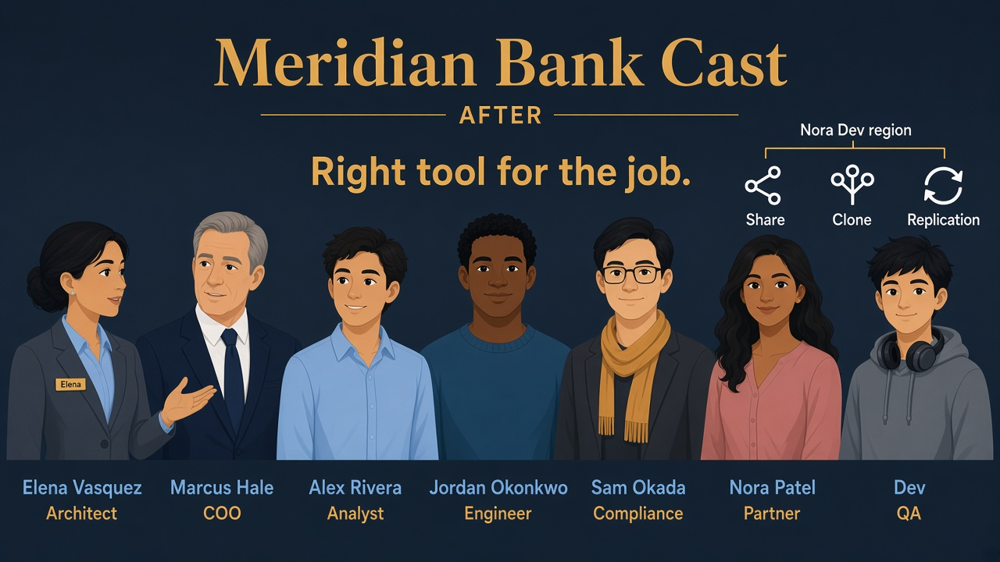
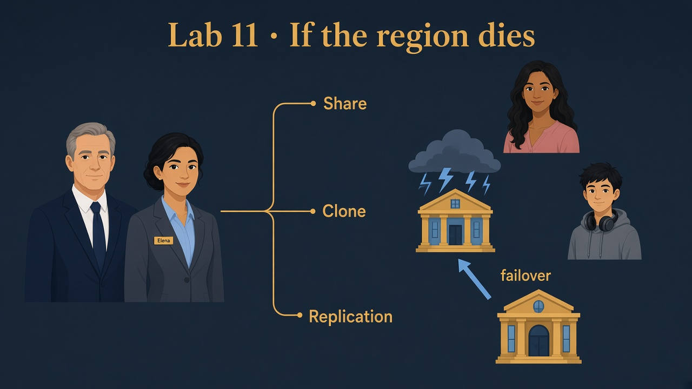

Lab 11 · Saturday night · You are Elena · Marcus asks about regions
What if the region dies?
Read every Teach first section before you run SQL.
One trial account cannot prove live failover — but you can learn the vocabulary Marcus expects and run safe SHOW commands in MERIDIAN_BANK.
Business problem
Marcus asks the board: “If us-east goes dark, can we still settle transactions?” Meridian has partner shares and QA clones — but no documented DR story.
Solution you will articulate
Separate share (Nora reads live SILVER_CURATED data), clone (Dev’s same-account QA fork), and replication (warm copy in another account/region for failover).
Name RPO (how much data you might lose) and RTO (how long until you’re back). Validate config with small SHOW commands.

Before
Region dies — no plan beyond “hope.”

After
Share vs clone vs replication — RPO/RTO story ready.
See it — don’t memorize definitions
Three tools — three business questions. Don’t swap them in the interview.
Lab 10
Share
Partner reads live objects in their account.
Nora · V_SHARE_TXNS not geo-DR
Lab 09
Clone
Same-account QA fork — zero-copy at create.
Dev · CREATE CLONE fast sandbox
Lab 11
Replication
Secondary region/account — failover group promote.
MERIDIAN_BANK replica warm standby
RPO
How stale is the copy?
Bounded by replication refresh lag.
15 min refresh → ~15 min data at risk
RTO
How long until users back?
DNS, promotion, smoke tests — not the same as RPO.
small RPO · long manual RTO ✗

Picture · Three tools
Share (Nora) vs Clone (Dev) vs Replication (region failover) for Marcus.
Three different jobs — don’t swap the tool
Lab 10 · Partner readShareNora · live provider objects · her WH
Lab 09 · QA forkCloneDev · same account · fast sandbox
Lab 11 · Region lossReplicationSecondary account/region · failover
Interview trap: “We already share with Nora, so we’re DR-ready.” No — share is cross-account read, not a promoted secondary region when the provider is down.
Decision tree Elena draws for Marcus
Start with the business question — not the Snowflake feature name.
Partner read?
→ Share
External org, live SILVER_CURATED metrics.
Nora · SHARE_MERIDIAN_TXNS
Internal QA?
→ Clone
Same account prod-like fork today.
Dev · CREATE … CLONE
Region down?
→ Replication
Failover group + tested runbook.
MERIDIAN_BANK → secondary
Wrong tool, right-sounding reason
Clone is fast QA — not geo-DR. Share is partner consumption — not your internal failover copy. Replication costs and ops — not for every sandbox.
RPO and RTO in one story
Bookmark vs fire drill
RPO is how far behind the secondary copy might be — like “our backup bookmark is 15 minutes old.”
Snowflake replication refresh lag is the honest input to that number.
RTO is the fire drill: who promotes the failover group, who repoints apps, who runs smoke tests on WH_BANK_XS, and how long that takes.
A trial account lets you describe the runbook; production must rehearse it.
Saturday night in Marcus’s office
Marcus: “Board wants numbers — RPO, RTO — not ‘we use Snowflake.’”
Elena: “Nora is share. Dev is clone. Region loss is replication on MERIDIAN_BANK. On trial I’ll SHOW what’s configured; prod gets a tested promotion checklist.”
1
Set session (Elena’s lab badge)
What this does
Uses ROLE_BANK_LAB_ADMIN and the cheap warehouse — same as other labs. SHOW commands are read-only catalog checks.
Why Elena does it
Marcus wants proof you know where to look before claiming replication exists.
SQL · context
USE ROLE ROLE_BANK_LAB_ADMIN;
USE WAREHOUSE WH_BANK_XS;
USE DATABASE MERIDIAN_BANK;
✓ Snowsight shows MERIDIAN_BANK as current database
2
SHOW replication databases
What this does
Lists databases in this account that participate in replication (as primary or secondary). Empty on a fresh trial is normal — you still explain what production would show.
What you should see
Either no rows, or a row for MERIDIAN_BANK with replication role/region columns populated in a real dual-account setup.
SQL · catalog
SHOW REPLICATION DATABASES;
Trial honesty
If the result is empty, say aloud: “No replication configured yet — here is the ALTER DATABASE line we would run on primary.”
3
SHOW failover groups
What this does
Lists failover groups — the named bundle Marcus promotes during region loss. Again, empty on trial is OK for learning.
SQL · failover catalog
SHOW FAILOVER GROUPS;
✓ You can point Marcus to this command in Snowsight after production setup
4
Org accounts (discuss if blocked)
What this would do
On an org admin role, lists accounts in the Snowflake organization — useful when wiring primary → secondary account IDs.
Why we only mention it on trial
Personal trials often lack org admin. Interview answer: “I’d use org admin or account metadata from infra, not guess account locators.”
SQL · optional (may error on trial)
-- Requires org admin on many setups:
-- SHOW ORGANIZATION ACCOUNTS;
5
Production pattern (explain — two accounts)
What each line means
You will not run live failover on one trial account. Read these as Marcus’s architecture slide — primary enables replication, secondary refreshes, runbook promotes failover group.
SQL · primary — enable replication (reference)
-- On PRIMARY account:
-- ALTER DATABASE MERIDIAN_BANK ENABLE REPLICATION TO ACCOUNTS = <secondary_account_id>;
SQL · failover group + promotion (reference)
-- Create REPLICATION / FAILOVER GROUP including MERIDIAN_BANK
-- Secondary account: refresh on schedule (lag → RPO)
-- Controlled failover: promote secondary when primary region is down (steps → RTO)
✓ Out loud: lag minutes → RPO; runbook minutes → RTO
Elena’s wrap-up (say this out loud)
“Marcus needed DR language, not buzzwords. I separated share for Nora, clone for Dev, and replication for region loss with explicit RPO/RTO from lag and failover steps.
On trial I proved discipline with SHOW REPLICATION DATABASES — production gets a tested runbook on MERIDIAN_BANK.
Outcome: board hears an honest continuity plan.”